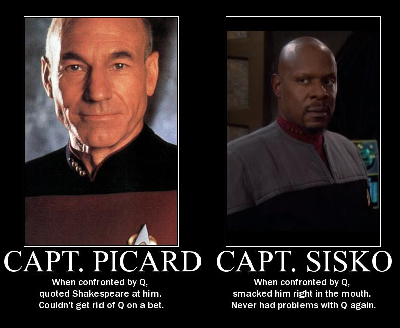

Disclaimer: The following blogs and websites are included for their interesting content, but this doesn't mean I fully endorse their views—especially when it comes to politics. I simply enjoy reading diverse perspectives.
Physics and Math

Advices
- Four Golden Lessons - Weinberg
- Como não ser um zumbi científico - Barata
- How to become a GOOD Theoretical Physicist - Gerard ’t Hooft
- Advice - John Baez
- Advice to a Young Mathematician - Michael Atiyah
Websites
- Quanta Magazine
- Planet Musings
- Sociedade Brasileira de Física
- Sociedade Brasileira de Matemática
- Revista Brasileira de Ensino de Física
- Scipost
- The Journal of Open Source Software
Blogs and Webpages
Linux and all that...

Software and Ricing
FOSS
News
TV Shows and movies

TV Shows Wiki
Full Movies (Youtube)
Miscellaneous